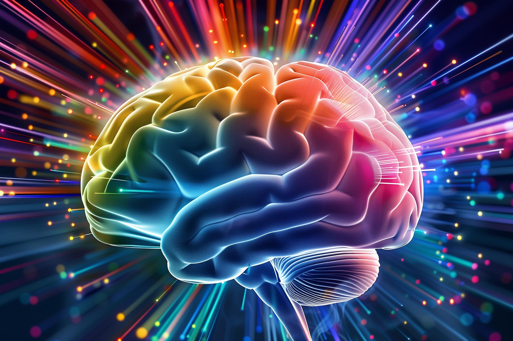
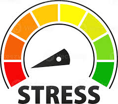
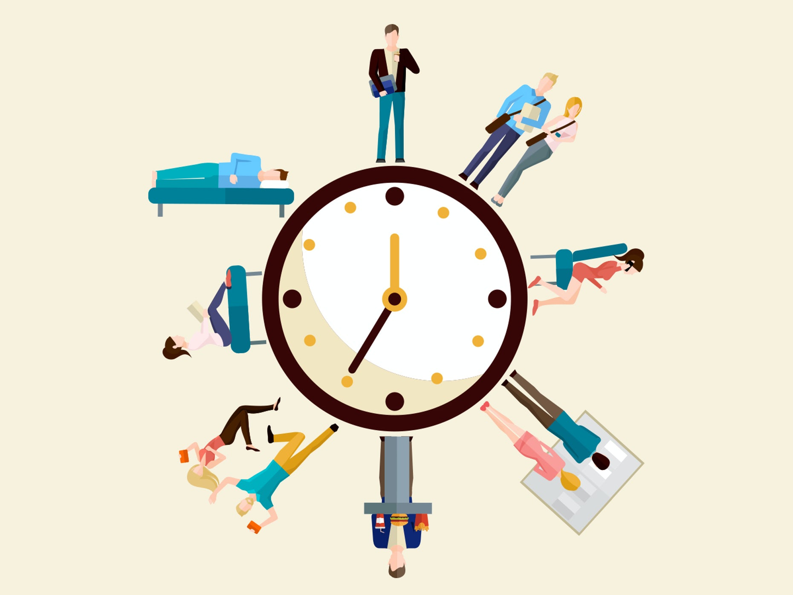

Exploring Muscles and the Mind
How lifting weights uplifts your mental health
-

Neurochemical Boost
Resistance training sparks an “endorphin rush” similar to a runner’s high. Elevates mood-regulating neurotransmitters (serotonin, dopamine, norepinephrine).
-

Stress-Axis Regulation
Balances the HPA axis to curb chronic cortisol spikes. Promotes emotional resilience against anxiety and depressive symptoms.
-
Antidepressant-Like Effects
Biological shifts from lifting can mirror—and sometimes rival—those of medication. Offers a natural adjunct (or alternative) to traditional treatments.
-

Structured Routine for Stability
Focus, repetition, and progression create predictability. Provides therapeutic contrast to chaotic thought patterns and lowers anxiety over time.
Strength training offers a holistic approach to mental and emotional well-being, combining physical effort with profound psychological benefits.
Strength for Everyone
Any Location
No gym? No problem. Resistance bands and bodyweight workouts make lifting possible anywhere.

Any Ability
Programs can be scaled to fit energy levels, mobility, and experience. Perfect for beginners.
Any Budget
Affordable tools—like dumbbells or even canned goods—mean mental health isn’t paywalled.
Why It Works—and Sticks
Improved Self-Efficacy
Tangible strength gains fosters a sense of control and achievement, countering learned helplessness and increasing psychological resilience
Better Body Image
Lifting redirects attention from appearance to strength and function, improving self-esteem
Motivational Feedback Loop
Randomized trials show lifting reduces symptoms regardless of starting mental health—this suggests weight lifting causes improvement, not just coincides with it.
Strength in Numbers
Group lifting, gym culture, or shared routines can foster meaningful connections and a sense of belonging, both of which are protective against depression and anxiety.
Built to Last
Weight lifting offers measurable progress that motivates consistency. Small wins—like lifting more or refining form—build long-term engagement. For those managing chronic anxiety and depression, the stability of routine fosters emotional durability and relapse prevention.
A Long-Term Ally
Some professionals worry that emphasizing weight lifting distracts from psychological therapies. But this creates a false divide—mental and physical health are deeply linked. As research by Blumenthal et al. (2007) demonstrates, integrating exercise with traditional treatments produces better results than either alone. Resistance training should be viewed as part of a holistic toolkit, not a replacement.
The long-term impact is especially compelling. Studies like Martinsen (2008) show that regular lifters are less likely to relapse into depressive episodes. Discipline, bodily autonomy, and routine offer protective structure and build resilience. Weight lifting isn't just treatment—it's prevention.
Mind and Muscle, Together
Weight lifting isn't a cure-all—it's a complement. Combined with therapy or medication, it creates a powerful, whole-person approach to healing. Resistance training addresses body and mind, offering tools for both recovery and resilience.
References
- Blumenthal, J. A., Babyak, M. A., Doraiswamy, P. M., Watkins, L., Hoffman, B. M., Barbour, K. A., Herman, S., Craighead, W. E., Brosse, A. L., Waugh, R., Hinderliter, A., & Sherwood, A. (2007). Exercise and pharmacotherapy in the treatment of major depressive disorder. Psychosomatic Medicine, 69(7), 587–596.
- Craft, L. L., & Perna, F. M. (2004). The benefits of exercise for the clinically depressed. Primary Care Companion to the Journal of Clinical Psychiatry, 6(3), 104–111.
- Gordon, B. R., McDowell, C. P., Lyons, M., & Herring, M. P. (2017). The effects of resistance exercise training on anxiety: A meta-analysis and meta-regression analysis of randomized controlled trials. Sports Medicine, 47(12), 2521–2532.
- Herring, M. P., O’Connor, P. J., & Dishman, R. K. (2010). The effect of exercise training on anxiety symptoms among patients: A systematic review. Archives of Internal Medicine, 170(4), 321–331.
- Kandola, A., Ashdown-Franks, G., Hendrikse, J., Sabiston, C. M., & Stubbs, B. (2019). Physical activity and depression: Towards understanding the antidepressant mechanisms of physical activity. Neuroscience & Biobehavioral Reviews, 107, 525–539.
- Kvam, S., Kleppe, C. L., Nordhus, I. H., & Hovland, A. (2016). Exercise as a treatment for depression: A meta-analysis. Journal of Affective Disorders, 202, 67–86.
- Martinsen, E. W. (2008). Physical activity in the prevention and treatment of anxiety and depression. Nordic Journal of Psychiatry, 62(Suppl 47), 25–29.
- Rethorst, C. D., Wipfli, B. M., & Landers, D. M. (2009). The antidepressive effects of exercise: A meta-analysis of randomized trials. Sports Medicine, 39(6), 491–511.
- Ross, R. E., VanDerwerker, C. J., Saladin, M. E., & Gregory, C. M. (2023). The role of exercise in the treatment of depression: Biological underpinnings and clinical outcomes. Molecular Psychiatry, 28(1), 298–328. https://doi.org/10.1038/s41380-022-01819-w
- Sharma, A., Madaan, V., & Petty, F. D. (2006). Exercise for mental health. Primary Care Companion to the Journal of Clinical Psychiatry, 8(2), 106.